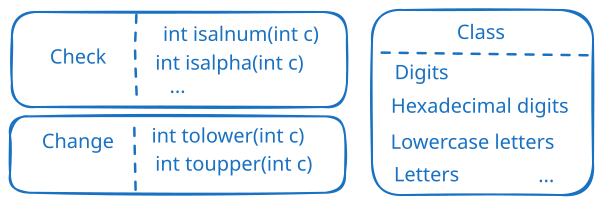

| 序号 | 函数 & 描述 |
|---|---|
| 1 | int isalnum(int c) 该函数检查所传的字符是否是字母和数字。 |
| 2 | int isalpha(int c) 该函数检查所传的字符是否是字母。 |
| 3 | int iscntrl(int c) 该函数检查所传的字符是否是控制字符。 |
| 4 | int isdigit(int c) 该函数检查所传的字符是否是十进制数字。 |
| 5 | int isgraph(int c) 该函数检查所传的字符是否有图形表示法。 |
| 6 | int islower(int c) 该函数检查所传的字符是否是小写字母。 |
| 7 | int isprint(int c) 该函数检查所传的字符是否是可打印的。 |
| 8 | int ispunct(int c) 该函数检查所传的字符是否是标点符号字符。 |
| 9 | int isspace(int c) 该函数检查所传的字符是否是空白字符。 |
| 10 | int isupper(int c) 该函数检查所传的字符是否是大写字母。 |
| 11 | int isxdigit(int c) 该函数检查所传的字符是否是十六进制数字。 |
| 1 | int tolower(int c) 该函数把大写字母转换为小写字母。 |
| 2 | int toupper(int c) 该函数把小写字母转换为大写字母。 |
| 类别 | 介绍 |
|---|---|
| 数字 | { 0, 1, 2, 3, 4, 5, 6, 7, 8, 9 } |
| 十六进制数字 | { 0, 1, 2, 3, 4, 5, 6, 7, 8, 9, A, B, C, D, E, F, a, b, c, d, e, f } |
| 小写字母 | { a, b, c, d, e, f, g, h, i, j, k, l, m, n, o, p, q, r, s, t, u, v, w, x, y, z } |
| 大写字母 | { A, B, C, D, E, F, G, H, I, J, K, L, M, N, O, P, Q, R, S, T, U, V, W, X, Y, Z } |
| 字母 | 小写字母和大写字母的集合 |
| 字母数字字符 | 数字、小写字母和大写字母的集合 |
| 标点符号字符 | { !, ", #, $, %, &, ', (, ), *, +, ,, -, ., /, :, ;, <, =, >, ?, @, [, , ], ^, _, `, {, |, }, ~ } |
| 图形字符 | 字母数字字符和标点符号字符的集合 |
| 空格字符 | 制表符、换行符、垂直制表符、换页符、回车符、空格符的集合 |
| 可打印字符 | 字母数字字符、标点符号字符和空格字符的集合 |
| 控制字符 | 在 ASCII 编码中，八进制代码从 000 到 037，以及 177（DEL） |
| 空白字符 | 包括空格符和制表符 |
| 字母字符 | 小写字母和大写字母的集合 |
[1] https://www.runoob.com/cprogramming/c-standard-library-ctype-h.html